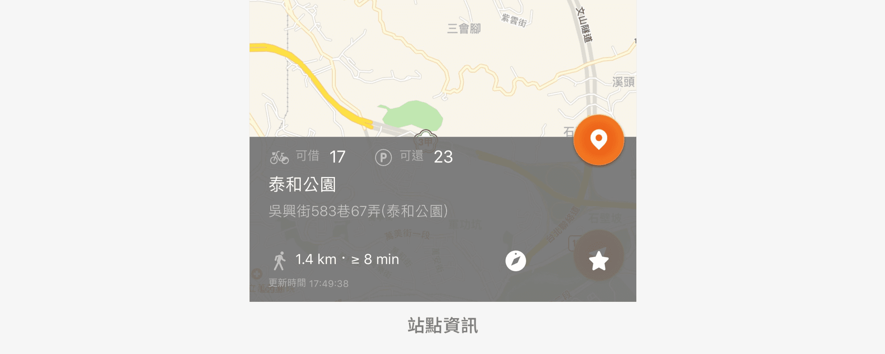
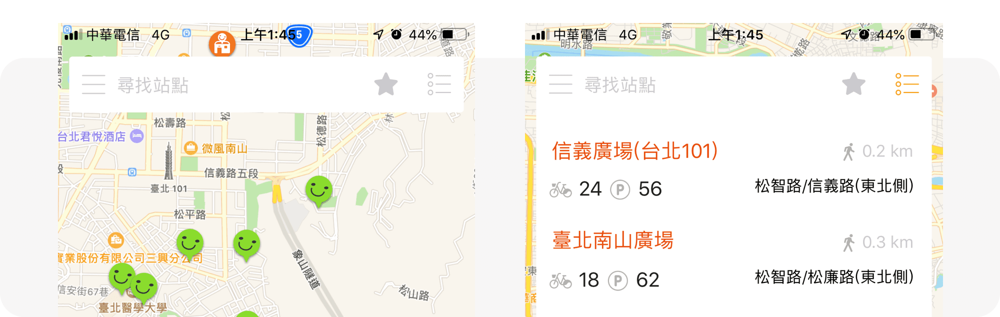

Ubike App
結合實體站點提供了「站點資訊」、「會員中心」等服務，期望讓民眾更舒適享受騎乘
Ubike 的流程及樂趣。
不過實際上在 App 的體驗存在一些能夠改善的空間，這次 redesign
希望可以透過使用者分析和產品分析發現問題，針對站點頁面做出優化設計。

Youbike 官方網站截圖
2020.4-5（一個月）
個人 Redesign 練習
競品分析、介面設計
Ubike App
結合實體站點提供了「站點資訊」、「會員中心」等服務，期望讓民眾更舒適享受騎乘
Ubike 的流程及樂趣。
不過實際上在 App 的體驗存在一些能夠改善的空間，這次 redesign
希望可以透過使用者分析和產品分析發現問題，針對站點頁面做出優化設計。
首先根據台北市政府 106 年公共自行車使用特性報告的一些資料可以大致掌握 Ubike 騎乘者的輪廓：
80.5% 的使用者一個月內租借次數少於 5 次，其中 43.7% 的使用者一個月內只租借 1 次，以非常態使用居多。
平日租借以早晚通勤時間為主，熱門站點主要在捷運站與學校、商圈之間；
假日則以下午時段為主，租借時間普遍較長，且多為同站借還，熱門站點多靠近河濱公園、學校附近，可推斷為休閒目的使用。
首先會員相關功能是只有官方有提供的服務，因此是騎乘者會使用 App
的一大原因，不過這次 redesign 會先把重點放在站點資訊。
站點資訊部分依當下情境分為兩種需求：
可以合理猜測非常態使用者中有部分情境是屬於臨時起意，例如等不到公車而決定騎乘 Ubike，這時對於不知道哪裡有站點的人來說，站點地理位置的資訊就是一個迫切的需求。
不管是常態或非常態、通勤或是休閒，只要目標站點很明確，那麼就可能產生這個需求，尤其是熱門站點的使用者。這當中有使用 App 的人或許是這麼想的：「我不想白跑一趟，到了現場才發現沒有空位或車子。」
根據調查結果，租借過程中民眾最不滿意的情況第一名為借不到車，目前官方的解決辦法為加強車輛的調度，雖然理想的狀況是 App 能夠幫助 Ubike 租借過程更加順利，但不難想像在一些熱門站點可能會很常遇到「剛剛看明明還有車 / 空位」的情況，因此這次 redesign 也希望透過設計讓使用者更能掌握站點狀況、加強控制感，減緩租借過程中的負面情緒。
首先在地圖模式中可以看到很多笑臉，不同顏色代表不同意義：
但顏色和資訊間並沒有相對應的關係，在這邊顏色給人感覺有程度上的差異但事實上並不是。對使用者來說不只增加了判斷的時間，甚至可能被混淆，而這麼重要的資訊只用「顏色」來傳達對色盲或色弱使用者也不夠友善。
接著在點擊笑臉後會出現如下圖的站點資訊，但視窗出現的 icon 和按鈕意義不夠明確，另外資訊內容的視覺層級也有改善的空間。
同樣是上圖的地圖模式，看得出來原設計的地圖顯示範圍是非常大的，但一來地圖上滿滿的笑臉不美觀，二來也難點擊，最後，使用者使用地圖時需要的多半是自身或是目的地「附近」的資訊，並不需要這麼大的範圍。 那麼要取多大範圍呢？ 以方圓 500 公尺為基準，大概可以顯示附近 3-7 個站點，或許是個不錯的選擇。
原設計是以 drawer 導覽，作為有一個主打功能的產品看起來合理，但就如前面提到的，事實上會員相關功能也是使用者使用產品的原因之一，把它放在 drawer 裡或許會有可視性不高的疑慮。 另外原設計主頁預設是地圖模式，但從使用者與產品的互動來看，需要列表資訊的使用者需求相對簡單，看一眼就能完成的任務讓他們每次都需要多點擊一次似乎不太合理。
其他較小的細節包括「輸入地名、街道等關鍵字也能得到結果， Placeholder 應該修改文案」、「小數點較不容易判斷， 一公里內可以改以公尺顯示」等等
首先在色彩的使用上運用了原本品牌色中的三個顏色，但為了增加資訊的易讀性，在淺色和深色模式都各自做了調整加強對比度，而在這裡顏色扮演的是輔助的角色，並不會讓顏色成為傳達資訊的唯一方法。